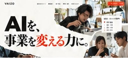

AIっぽさスコア
低いほど、定型的な印象が少ない
35/100
一部にAIらしい
印象があります
AIっぽさと、AI検索への伝わりやすさをチェックしました。

低いほど、定型的な印象が少ない
一部にAIらしい
印象があります
高いほど、AI検索への準備が整っている
具体的な情報の
補強が必要です
紙の表現と文字組みは印象的です。写真と説明に、VAIZOならではの情報を加えましょう。
数字の書体は、周囲のデザインと調和しています。
模型づくりの写真だけでは、AI開発・育成・M&Aとの関係が伝わりにくい状態です。
改善するなら：実際の業務画面や支援の場面を加える。
誰に、何を、どこまで提供するかを各事業に追記しましょう。
改善するなら：対象・課題・提供内容を短く整理する。
3つの事業リンクが同じトップページに移動しています。
改善するなら：事業ごとの詳細ページへ案内する。